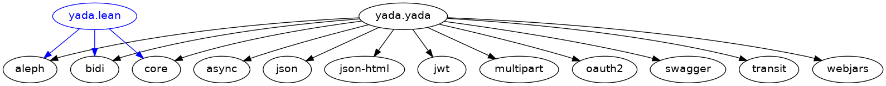
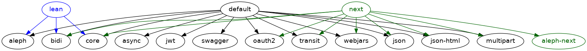

yada 2.0
by JUXT
Created: 2017-05-16 Tue 23:30
There is no yada 2.0
Long live the revolution
Don't break compatibility!
"Companies don't want to update their code every time you decide to rename a function in your standard library. Its role in Java's dominance can't be overstated. This culture … made its way into Clojure and ClojureScript, who haven't made breaking changes in the five years I've used them."
– Zach Oakes – ClojureScript: The industry's favorite functional frontend language – https://sekao.net/blog/industry.html
Java compatibility
new java.util.Date(12,12,12)
But…
What about?
- The clean new rewrite!
- Namespaced keys!
- clojure.spec!
A compromise…
- Maintain a stable yada 'API' for existing users
- Allow for new 'bundles' containing alternative yada APIs
yada API
(ns yada
(:require [yada.yada :as yada]))
["/yada" (yada/yada "yada")]
Potemkin to the rescue
Potemkin provides one more layer of indirection
"Computer Science is the belief that all problems can be solved by adding one more layer of indirection" – Derek deBruler
Potemkin: one more layer of indirection
(ns yada.yada
(:require
[potemkin :refer (import-vars)]
[lots of other stuff]))
(potemkin/import-vars
[yada.aleph listener server]
[yada.context content-type charset language]
[yada.handler handler yada interceptor-chain]
[yada.swagger swaggered]
[yada.resource resource as-resource])
yada extensions & bundles

yada extensions & bundles

yada extensions & bundles

API Extensibility
yadacan move forwards without breaking compatibility (hopefully!)yadanow has a proper extension mechanism for features that fall outside the HTTP specifications.
yada 1.2 !
A quick history of yada
Origins
- Introduced to REST around ~2005
- Worked on plugboard, a Clojure-port of WebMachine
- Discovered compojure-rest, and contributed
- Renamed it Liberator
- Spoke about it at London's EuroClojure in 2012
Async curiosity
- Gave talk on 'Adventures with core.async' at QCon 2014
- David Thomas Hume in audience, got chatting afterwards
- David had a PR prepared to make Liberator async (not merged)
2014 - Reflections on 'On The Market'
- Ring with Compojure
- Liberator with bidi
- (custom) fnhouse
- compojure-api
Ring
(defn handler [request]
{:status 200
:headers {"Content-Type" "text/html"}
:body "Hello World!!!!!!!!!!!!!!!1
"})
Liberator
(defresource parameter [txt]
:available-media-types ["text/plain"]
:handle-ok (fn [_] (format "The text is %s" txt)))
fnhouse
(defnk $entries$POST
"Add a new entry to the guestbook"
{:responses {200 schemas/ClientEntry}}
[[:request body :- schemas/EntryData]
[:resources guestbook index]]
(let [entry-id (swap! index inc)
indexed-entry (assoc body :index entry-id)]
(swap! guestbook assoc entry-id indexed-entry)
{:body indexed-entry}))
compojure-api
(GET "/plus" []
:return Total
:query-params [x :- Long, y :- Long]
:summary "x+y with query-parameters"
(ok {:total (+ x y)}))
(POST "/minus" []
:return Total
:body-params [x :- Long, y :- Long]
:summary "x-y with body-parameters"
(ok {:total (- x y)}))
yada
- All the features
- Including all the (good) features from all other libraries (e.g. Swagger)
- All of 'new' HTTP (httpbis)
- Async
yada: A revolution in HTTP library design
- Ring (+ Rack, Servlet, etc.): functional model
- Liberator (+ WebMachine, etc.): execution model
yada: resource model
What's wrong with Ring?
Example A: wrap-head
(defn head-request
"Turns a HEAD request into a GET."
{:added "1.2"}
[request]
(if (= :head (:request-method request))
(assoc request :request-method :get)
request))
(defn head-response
"Returns a nil body if original request was a HEAD."
{:added "1.2"}
[response request]
(if (and response (= :head (:request-method request)))
(assoc response :body nil)
response))
Example B: Compojure routing
(routes
(GET "/hello" [] (fn [req] "Hello World!"))
(POST "/hello" [] (fn [req] (launch-missiles!))))
- Q. Which HTTP status do we get from this Ring handler if we send a
PUTrequest to/hello? - Q. Which HTTP status should we get?
Example C: wrap-modified
5.2. Conditionals
The HTTP conditional request header fields [RFC7232] allow a client to place a precondition on the state of the target resource, so that the action corresponding to the method semantics will not be applied if the precondition evaluates to false.
― RFC 7231
Example C: wrap-modified
(defn wrap-not-modified
"Middleware that returns a 304 Not Modified from the wrapped handler
if the handler response has an ETag or Last-Modified header, and the
request has a If-None-Match or If-Modified-Since header that matches
the response."
{:added "1.2"}
[handler]
(fn [request]
(-> (handler request) ; WAT?
(not-modified-response request))))
Ring cannot implement HTTP properly due to data blindness
yada: resources as data
{:access-control
{:authentication ...}
:methods
{:get
{:produces [{:media-type "text/html" :charset "UTF-8"}
"application/json" "application/edn"]
:response (fn [ctx] {:foo :bar})}
:put
{:consumes "multipart/form-data"
:parameters {:form {:foo Keyword}}
:response (fn [ctx] ...)}}}
Advantages of the resource model
- Operations in HTTP are not independent
- Critical features of HTTP depend on this!
- e.g. conditional requests
Integration with bidi
- Target a resource's id
- Place resources in route structures
- Relative links
- Routing-info injected into request
Integration with bidi
[["/accounts/" :accno]
(yada/resource {:id :account})]
["/my-account"
(yada/redirect :account
{:route-params {:accno "1234"}})]
Integration with bidi
(yada/resource
{:methods
{:get
{:response
(fn [ctx]
(java.net.URI.
(yada/href-for
ctx :account
{:route-params
{:accno
(get-in ctx [:authentication "default"
:account-id])}})))}}})
yada content negotiation
- Declarative (optionally dynamic) server-provided representations
- Negotiables
- Media types
- Charsets
- Languages
- Encodings (partially)
- Parameters and q-values
- Proper headers
- Vary, ETags, 300 Multiple Representations
- Enables media-types
- Hypermedia
- API versioning
yada request parameter coercion
- Parameter declarations (query, path, header, cookie, form, body)
- Forced 400 (Client Error) on validation error
- Coercion of parameters to declared types:
{:parameters {:query {:id UUID :from Date}}}
yada response body coercion
(yada/resource
{:methods
{:get
{:produces #{"text/html" "application/json"}
:response {:just :an :ordinary :map}}}})
yada resource coercion
(yada "yada")
(yada {:do "a deer, a female deer"
:re "(let's stop this now)"})
(yada (new-template-resource
"page.html" {:title "yada"}))
(yada (map->PostgresTable {:table "ACCOUNTS"}))
(-> "Let's go meta!" yada yada yada)
yada security
- Authentication (multiple schemes)
- Authorization
- Multiple realms
- OAuth2
- HSTS security headers
- CORS
- Forthcoming blog-series
yada async
- Server Sent Events
(yada/resource
{:methods
{:get
{:produces "text/event-stream"
:response (chan)}}})
yada async
{:parameters {:get {:query {"q" String}}}
:methods
{:get
{:response
(fn [ctx]
(http/get
(str "https://www.google.com/q=clojure+"
(get-in ctx
[:parameters :query "q"]))))}}}
yada async
- Return futures, promises, streams, channels…
- d/chain
- (Credit to ztellman's manifold)
yada methods & headers
- OPTIONS, HEAD, TRACE, BREW
- Custom methods
- Method semantics
yada flexibility
- Interceptor chains
- Possible to mutate per-resource and per-request
yada challenges
- Documentation
- Swagger
- Error handling, stack traces
- Dev versus Prod
- Debugging
- Security!
Books!
Demo
Documentation
Profiles
Debugging
Missing pieces (HTTP)
- Reactive negotiation
- 300 Multiple Representations
- RFC 7233: Range requests
- Partial responses
- Content encodings (gzip, deflate)
WebDAV
Reverse proxy functionality
- TLS termination
- U2F yubikey support
- HTTP 2.0 server-push
- Cacheing (RFC 7234)
- Compression (gzip encoding)
API 'Gateway'
- Rate limiting
- Load balancing
- Analytics
- API distribution
Reflections
yada has broadly met its initial goals, but more to be done.
Tension between static and dynamic (Swagger prefers static, but REST is definitely dynamic!)
HTTP is not modular, too many interconnections!
Security is becoming increasingly critical.
One more thing…
2017: The Year of ClojureScript on the Server
yada in ClojureScript?
- Planck/Lumo (cljs on WebKit/NodeJS)
- Macchiato (@yogthos)
- Mach (4s
yadastartup) - AWS Lambda
Long live the revolution
Thanks!
Q&A
- Anything you'd like to see added?
- Gripes?